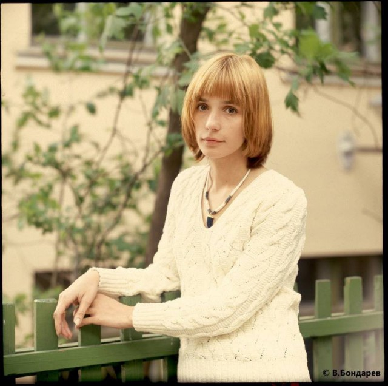

Лучшие отечественные актёры
Андрей Васильевич Мягков
Санкт-Петербург
1938
Андрей Станиславович Ростоцкий
Москва
1957-2002

Александр Шалвович Пороховщиков
Москва
1939
Александр Артёмович Адабашьян
Москва
1945
Александр Леонидович Кайдановский
Ростов-на-Дону
1946-1995
Алла Сергеевна Демидова
Москва
1936
Алла Борисовна Пугачёва
Москва
1949
Армен Борисович Джигарханян
Ереван, Армения
1935
Борис Григорьевич Плотников
Невьянск
1949
Виктор Алексеевич Проскурин
Атбасар, Казахстан
1952
Валентин Иосифович Гафт
Москва
1935
Валерий Сергеевич Золотухин
Алтайский край
1941
Василий Борисович Ливанов
Москва
1935
Василий Семёнович Лановой
Москва
1934
Василий Макарович Шукшин
Сростки
1929-1974

Вера Витальевна Глаголева
Москва
1956
Владимир Алексеевич Конкин
Саратов
1951
Георгий Георгиевич Тараторкин
Санкт-Петербург
1945
Евгений Александрович Евстигнеев
Нижний Новгород
1926-1992
Евгений Арсеньевич Киндинов
Москва
1945